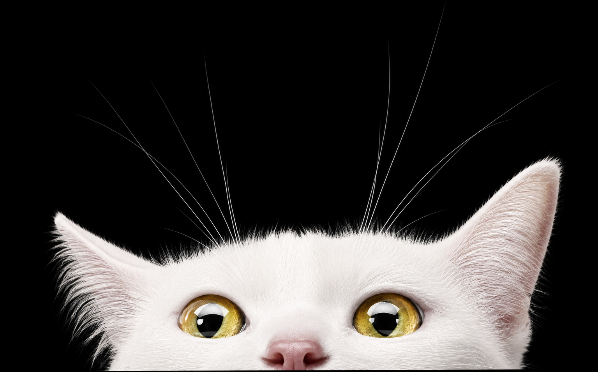

Sua biblioteca deixa rastros.
Isto não é apenas uma lista. Cada música adicionada ocupa um lugar em um mapa que pertence somente a você.
UM ARQUIVO · UM PRIMEIRO PONTO
Isto não é apenas uma lista. Cada música adicionada ocupa um lugar em um mapa que pertence somente a você.
UM ARQUIVO · UM PRIMEIRO PONTODê outro tempo
à sua música.
Arraste um áudio ou importe um arquivo ou link.
WAV · MP3 · FLAC · OGG · M4A